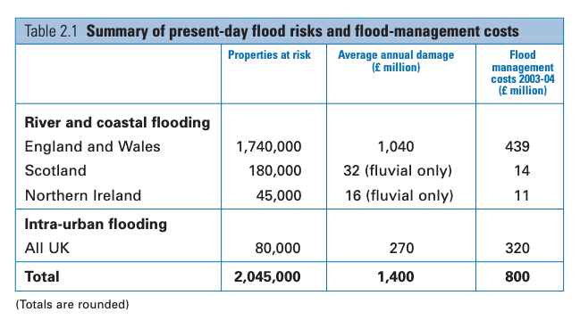
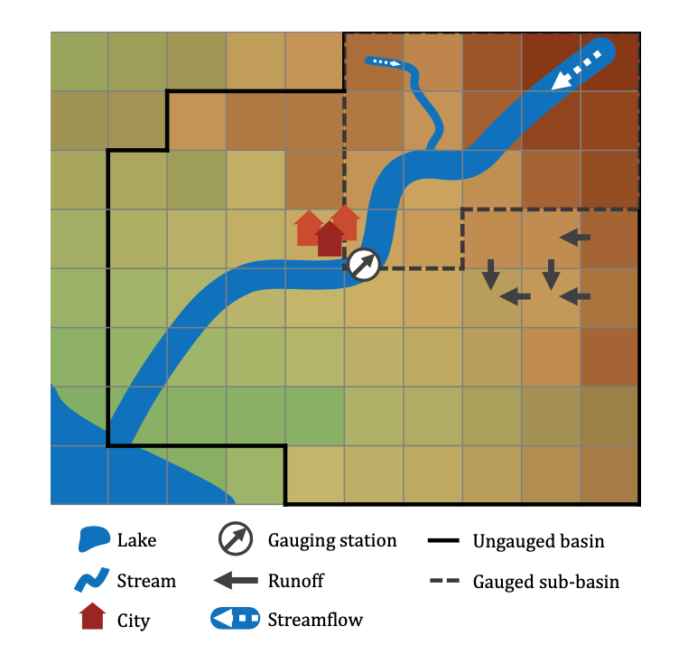

24 Box models for flood estimation
So far, we have focused primarily (though not exclusively) on mathematical models of climate, which concerns long-term averages of weather over many years. We have focused primarily (though not exclusively) on simplified box or conceptual models. For instance, in the last few chapters, we have studied box models of the ocean, where temperatures and salinity are lumped together into different categories/regions (or boxes), with exchanges of quantities between such boxes. These can also be considered phenomenological models or process-driven models.
Similar ideas are used to model other aspects of the environment. In this chapter, we will provide in introduction on the mathematical modelling of flooding. Flooding is considered one of the most significant dangers posed around the world, and within the UK, the cost of flood damage and flood prevention is estimated at £200 billion per year.

24.1 Terminology
First, examine a typical geometry in the image below.

In flooding, hydrologists are primarily interested in two related concepts of streamflow and runoff. Streamflow is typically measured at a prominent outlet, such as the mouth of a river or the outflow to a lake, and consists of the amount of water that flows through a cross section, expressed as cubic metres per second. At any given point in the above diagram, we can also measure the runoff, which is expressed in millimetres per day (mm/d). Given the river path in the figure above, we could theoretically convert from runoff to streamflow: we for each grid, we multiply the runoff by the surface area, which yields the volumetric per time quantity of streamflow.
In the above diagram, the upstream area of an outlet (the lake or the gauging station, for instance), is called a basin, catchment, or watershed.
For reference, these models are re-interpreted and cleaned up versions of what appears in the work by Jothityangkoon et al. (2001).
24.2 A basic flood model
The basic flood model or rainfall-runoff model is essentially a water balance equation. Here is a simple model with one store and one parameter. We consider the total water exchange that occurs in a given area. Prepitation input, \(P(t)\), measured in mm/day is obtained. The quantity \(S(t)\), measured in mm, then measures the current “storage” in the soil moisture. Actual evaporation \(E_a(t)\) will remove moisture from the soil. Then: \[ \frac{\mathrm{d}S}{\mathrm{d}t} = P(T) - Q_{se}(t) - E_a(t). \tag{24.1}\] The makeup of the right hand-side are as follows.
The term \(Q_{se}\) measures the saturation excess overland flow. This is essentially the quantity that arises when the soil cannot support additional moisture, and produces runoff. We can consider it modelled as: \[ Q_{se}(T) = P(t) \sigma(S - S_\text{max}), \] where \(\sigma\) is the sigmoid or activation function. For instance, we might take \[ \sigma(S - S_\text{max}) = H(S - S_{\text{max}} = \begin{cases} 1 & S > S_{\text{max}} \\ 0 & S < S_{\text{max}} \\ 1/2 & S = S_{\text{max}}, \end{cases} \] where \(H\) is the Heaviside step function, which for convenience takes the midpoint value when evaluated at zero.
The above model for \(Q_{se}\) makes some sense. If the soil has not exceed some ‘maximum soil moisture storage’ value \(S_\text{max}\), then there is no saturation excess and the total runoff is zero. However, once this threshold is exceed, the precipitation is routed directly to the runoff.
The actual evaporation (or more accurately evapotranspiration) includes interception loss from plant canopies at the land surface, and combined evaporation and transpiration taken out of the soil water. We take it to be written in a fashion proportional to the total soil moisture: \[ E_a(t) = \frac{E_p(t)}{S_\text{max}} S(t). \] We assume that the metereological data provides estimates of the potential evaporation, . You do not have to know about the specifics of the difference between actual and potential evaporation, though see a description of how these two quantities are measured at this link. Above, it is nice to think of the fact that the dimensions of must be measured in storage units (mm) per time. The quantity \[ \frac{S_\text{max}}{E_p}, \] is the approximate time it would take for a bucket with \(S_\text{max}\) to completely evaporate.
Therefore, on the assumption that metereological data provides values of precipitation \(P\) and potential evapotranspiration (or simply evaporation), we can use the above to calculate the soil moisture \(S\). The key quantity to predict is the runoff, which in this case is simply the saturation excess: \[ \text{runoff} = Q_{se}(t). \]
In summary, the above model consists of a single store and a single parameter (\(S_\text{max}\)). In theory, you would obtain time-series data of streamflow or runoff, and then attempt to calibrate the parameter.
24.3 A flood model with slow and fast flows
If the above model is tested on real data, we would typically observe that it performs well in predicting long-time runoffs, but that it does not cope very well with inter-annual variations. Indeed, it fails to capture a key mechanism of water transfer, which suggests that runoff should be separated into two components: a delayed subsurface runoff, \(Q_{ss}(t)\), when soil moisture storage in the bucket exceeds some field capacity threshold (think of this as groundwater flow); and the previous saturation excess (think of this as overland flow).
In addition, we might want to separate the evopotranspiration as \[ E_a = E_b + E_v, \] where \(E_b\) measures the bare soil evaporation while \(E_v\) measures the transpiration due to vegetation. In theory, this would allow us to partition land into soil-covered or vegetation-covered.
The model is then \[ \frac{\mathrm{d}S}{\mathrm{d}t} = P(t) - [Q_{se}(t) + Q_{ss}(t)] - [E_b(t) + E_v(t)]. \] First, the saturation excess overland flow is as it was previously: \[ Q_{se}(t) = P(t) \sigma (S - S_\text{max}), \] where again for simplicity, we could take \(\sigma = H\) and use the Heaviside step function as the activation function..
We also allow now for the subsurface flow, \(Q_{ss}(t)\), (again in mm/day), modelled via \[ Q_{ss}(t) = a(S - S_{fc}) \sigma (S - S_{fc}), \] which produces flow proportional to how much the soil has exceeded its field capacity value, \(S_{fc}\), subject to a proportionality constant \(a\).
As for the two evaporation rates, they are subsequently weighted by a factor dependent on \(M\), the forest fraction parameter, with \(0 < M < 1\). We do not go into detail on their forms, but refer the reader to the original work by Jothityangkoon et al. (2001), from which this model was taken. The evaporation rates are, \[ E_b = (1 - M) E_p(t) \frac{S}{S_\text{max}}. \] The above is the usual expression for the evaporation rate, but additional weighted by the \((1 - M)\) factor, which is zero if the area is entirely forest-covered. Next, the vegetation-covered evaporation is, \[ E_v = \begin{cases} M E_p & S > S_{fc}, \\ \frac{S}{S_{fc}} M E_p & S < S_{fc}, \end{cases} \] and so the model depends on whether the groundwater region is entirely saturated or not. If the groundwater region is entirely saturated, then the maximal transpiration occurs, specifically with \(E_v = E_p\) for the completely forest-covered region. On the other hand, if the groundwater region is not completely saturated, then we allow the vegetative transpiration rate to be a fraction of \(E_p\), dependent on the soil moisture storage \(S\).
Again, the runoff is calculated via \[ Q = Q_{se} + Q_{ss}. \] This model has one store and 4 parameters: \(S_\text{max}\) (mm), \(S_{fc}\) (mm), \(a\) (1/day), and \(0 < M < 1\). Like all other models, you can attempt to train the model by processing known data and fitting the parameters.
24.4 Calibration and analaysis
The procedure, which is implemented via code provided in the accompany paper by Trotter et al. is now as follows. We obtain calibration data, primarily of precipitation \(P(t)\), potential evapotranspiration \(E_p(t)\), and streamflow or runoff.
As an example, we use 5 years worth of climate and streamflow data from Buffalo River near Flat Woods, Tennessee, USA, to illustrate. The catchment was randomly selected from those provided within the CAMELS dataset Addor et al. (2017). The USGS gauge ID for this catchment is 3604000.
When testing models’ performance against real data, hydrologists often use a range of metrics to evaluate and compare these models. One of the most commonly used is the Nash-Sutcliffe efficiency (NSE). NSE acts like a mean squared error (MSE) between observed and simulated flow discharge. It is calculated by taking one minus the ratio between the error variance of the model time series and the error variance of the observed time series of flow discharge. We have \[ \mathrm{NSE}= 1 - \frac{\sum_{t=1}^T\left(Q_o^t-Q_m^t\right)^2}{\sum_{t=1}^T\left(Q_o^t-\bar{Q}_o\right)^2} \] where \(\bar{Q}_o\) is the mean of observed discharges for \(T\) data points and \(Q_m^t\), \(Q_o^t\) are the model discharge and observed discharge at time \(t\). Note that NSE \(\in (\infty, 1]\), with values closer to \(1\) indicating the model has a great predictive skill for flow discharges based on the observed data. When NSE \(= 0\), the model has the same predictive skill as the mean of the time series in terms of the sum of the MSE. For NSE \(< 0\), the observed mean is a better predictor for the model and indicates the model is not performing well.
We won’t discuss how this is done in detail, but the essence is that we apply the flooding models above with approximated parameter values and obtain the simulated data \(Q_m^t\). The ODEs can be integrated using a normal integrator (similar to Euler’s method or perhaps something more sophisticated). Then during a predetermined ‘calibration’ period (in the below, roughly in the period 1990-1991), we apply an algorithm to determine the ‘best fitting’ parameters of the above model, whose values will hopefully minimise the objective function (given by the above NSE). Once this calibration is done, and the parameters determined, one can evaluate the NSE over a different ‘evaluation’ period to determine how well the model fits. The specific algorithm used below is called the covariance matrix adaption evolution strategy (CMA-ES, reference). CMA-ES is a stochastic, derivative-free, numerical optimisation algorithm.
24.4.1 The basic model
{kind=link}
And here is a blowup over a one-year period after the calibration.
{kind=link}
24.4.2 The slow-fast model
{kind=link}
And here is a blowup over a one-year period after the calibration.
{kind=link}